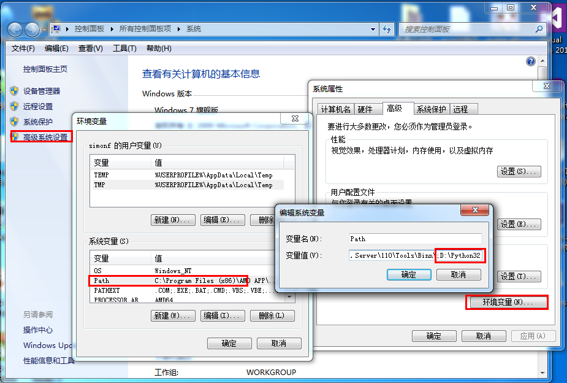

Python 環境構築
Python はクロスプラットフォームのプログラミング言語であり、さまざまなオペレーティングシステム上で動作します。
この章では、ローカルに Python 開発環境を構築する方法を紹介します。
Python は Windows、Linux、Mac OS X など複数のプラットフォームで利用できます。
ターミナルウィンドウに次のように入力することでpythonコマンドを実行して、ローカルに Python がインストールされているかどうか、および Python のインストールバージョンを確認できます。
- Windows：Windows 7 以降のバージョンを含みます。
- macOS：すべての主要な macOS バージョンに対応しています。
- Linux：Ubuntu、Debian、Fedora、CentOS など、ほぼすべての主要な Linux ディストリビューションに対応しています。
- Unix：FreeBSD、OpenBSD などの Unix 系システムに対応しています。
- 組み込みシステム：Raspberry Pi などのデバイス。
- モバイルプラットフォーム：特定のフレームワーク（Kivy など）を通じて iOS と Android をサポートします。
- クラウドプラットフォーム：AWS、Google Cloud、Azure などのクラウドサービス環境をサポートします。
Pythonダウンロード
Python の最新ソースコード、バイナリドキュメント、ニュースなどは Python 公式サイトで確認できます：
Python 公式サイト：https://www.python.org/
以下のリンクから Python のドキュメントをダウンロードできます。HTML、PDF、PostScript などの形式のドキュメントをダウンロードできます。
Python ドキュメントのダウンロード先：https://www.python.org/doc/
Pythonインストール
Python は多くのプラットフォームに移植されています（異なるプラットフォームで動作するように変更されています）。
使用しているプラットフォームに対応するバイナリコードをダウンロードし、Python をインストールする必要があります。
プラットフォームのバイナリコードが利用できない場合は、C コンパイラを使用してソースコードを手動でコンパイルする必要があります。
ソースコードをコンパイルすると、機能の選択肢が増え、Python のインストールにより柔軟性がもたらされます。
以下は各プラットフォームのインストールパッケージのダウンロード先です：

以下はさまざまなプラットフォームでの Python のインストール方法です：
Unix & Linux プラットフォームでの Python インストール:
Unix & Linux プラットフォームで Python をインストールする簡単な手順は次のとおりです：
- Web ブラウザを開いてアクセスしますhttps://www.python.org/downloads/source/
- Unix/Linux 用のソースコード圧縮パッケージを選択します。
- 圧縮パッケージをダウンロードして解凍します。
- いくつかのオプションをカスタマイズする必要がある場合は変更しますModules/Setup
- 実行します./configure スクリプト
- make
- make install
上記の操作を実行すると、Python は /usr/local/bin ディレクトリにインストールされ、Python ライブラリは /usr/local/lib/pythonXX にインストールされます。XX は使用している Python のバージョン番号です。
Windows プラットフォームでの Python インストール:
Windows プラットフォームで Python をインストールする簡単な手順は次のとおりです：
Web ブラウザを開いてアクセスしますhttps://www.python.org/downloads/windows/

- ダウンロードリストから Windows プラットフォーム用インストールパッケージを選択します。パッケージ形式は次のとおりです：python-XYZ.msiファイル、XYZ はインストールするバージョン番号です。
インストーラーを使用するにはpython-XYZ.msi、Windows システムは Microsoft Installer 2.0 に対応している必要があります。インストールファイルをローカルコンピュータに保存して実行し、お使いのマシンが MSI をサポートしているか確認してください。Windows XP 以降には MSI が含まれており、多くの古いマシンにも MSI をインストールできます。

ダウンロード後、ダウンロードパッケージをダブルクリックして Python インストールウィザードに入ります。インストールは非常に簡単で、デフォルト設定のまま「次へ」をクリックし続けるだけでインストールが完了します。
MAC プラットフォームでの Python インストール:
MAC システムには通常 Python 2.x バージョンの環境が付属しています。リンクからhttps://www.python.org/downloads/mac-osx/最新版をダウンロードしてインストールすることもできます。
環境変数の設定
プログラムや実行可能ファイルは多くのディレクトリに配置できますが、それらのパスはオペレーティングシステムが提供する実行可能ファイルの検索パスに含まれていない可能性があります。
path（パス）は環境変数に格納されます。これはオペレーティングシステムによって維持される名前付き文字列です。これらの変数には、利用可能なコマンドラインインタプリタやその他のプログラムに関する情報が含まれます。
Unix または Windows では、パス変数は PATH です（UNIX は大文字と小文字を区別し、Windows は区別しません）。
Mac OS では、インストーラの過程で Python のインストールパスが変更されます。他のディレクトリから Python を参照する必要がある場合は、path に Python ディレクトリを追加する必要があります。
Unix/Linux での環境変数の設定
- csh シェルの場合:入力します
setenv PATH "$PATH:/usr/local/bin/python"
、押しますEnter。 - bash シェル（Linux）の場合:入力します
export PATH="$PATH:/usr/local/bin/python"
、押しますEnter。 - sh または ksh シェルの場合:入力します
PATH="$PATH:/usr/local/bin/python"
、押しますEnter。
注意:/usr/local/bin/python は Python のインストールディレクトリです。
Windows での環境変数の設定
環境変数に Python ディレクトリを追加します：
コマンドプロンプト（cmd）で:入力します
path=%path%;C:\Python
押しますEnter。
注意:C:\Python は Python のインストールディレクトリです。
次の方法でも設定できます：
- 「コンピュータ」を右クリックし、「プロパティ」をクリックします
- 次に「システムの詳細設定」をクリックします
- 「システム環境変数」ウィンドウの「Path」を選択し、ダブルクリックします！
- 次に「Path」の行に Python のインストールパスを追加します（例: D:\Python32）。そのため、後ろにそのパスを追加します。ps：覚えておいてください。パスはセミコロン「;」で区切ります！
- 最後に設定が成功したら、cmd コマンドラインで「python」と入力すると、関連する表示が行われます。

Python 環境変数
以下は Python に適用される重要な環境変数です：
| 変数名 | 説明 |
|---|---|
| PYTHONPATH | PYTHONPATH は Python の検索パスです。デフォルトでは、import するモジュールは PYTHONPATH から探されます。 |
| PYTHONSTARTUP | Python は起動後、まず PYTHONSTARTUP 環境変数を探し、次にこの変数で指定されたファイル内のコードを実行します。 |
| PYTHONCASEOK | PYTHONCASEOK 環境変数を設定すると、Python がモジュールをインポートするときに大文字と小文字を区別しなくなります。 |
| PYTHONHOME | もう 1 つのモジュール検索パスです。通常は PYTHONSTARTUP または PYTHONPATH ディレクトリに組み込まれており、2 つのモジュールライブラリをより簡単に切り替えることができます。 |
Pythonの実行
Python を実行するには 3 つの方法があります：
1、対話型インタプリタ：
コマンドラインウィンドウから Python を起動し、対話型インタプリタで Python コードを書き始めることができます。
Unix、DOS、またはコマンドラインやシェルを提供するその他のシステムで Python コーディングを行うことができます。
または
C:>python # Windows/DOS
以下は Python コマンドライン引数です：
| オプション | 説明 |
|---|---|
| -d | 解析時にデバッグ情報を表示します |
| -O | 最適化されたコードを生成します（.pyo ファイル） |
| -S | 起動時に Python パスを検索する位置を導入しない |
| -V | Python のバージョン番号を出力します |
| -X | 1.6 以降、組み込みの例外（文字列のみに使用）は廃止されました。 |
| -c cmd | Python スクリプトを実行し、実行結果を cmd 文字列として扱います。 |
| file | 指定された Python ファイルで Python スクリプトを実行します。 |
2、コマンドラインスクリプト
アプリケーション内でインタープリタを起動することで、コマンドラインでPythonスクリプトを実行できます。次のようになります：
または
C:>python script.py # Windows/DOS
注意：スクリプトを実行する際は、そのスクリプトに実行権限があるか確認してください。
3、統合開発環境（IDE：Integrated Development Environment）: PyCharm
PyCharm は JetBrains が開発した Python IDE で、macOS、Windows、Linux システムに対応しています。
PyCharm の機能: デバッグ、シンタックスハイライト、プロジェクト管理、コードジャンプ、スマートヒント、自動補完、ユニットテスト、バージョン管理……
PyCharm ダウンロードアドレス：https://www.jetbrains.com/pycharm/download/
PyCharm インストールアドレス：https://www.runoob.com/pycharm/pycharm-install.html

PyCharm 中国語プラグインをインストールするには、メニューバーの File を開き、Settings を選択し、次に Plugins を選択し、Marketplace をクリックし、chinese を検索して、install をクリックしてインストールします：

今後の学習では、環境が正しく構築されていることを確認してください。
以降の章で示す例は、Python2.7.6 バージョンでテスト済みです。
その他の拡張
shaonianruntu
514***496@qq.com
Python 学習の初心者にとって、Anaconda パッケージ管理ソフトウェアをインストールするのは良い選択であり、後で Python の各種パッケージをインストールする手間を大幅に減らせます。Anaconda に付属の notebook でコードを書くほうが、IDE や Terminal よりもはるかに体験が良いです。
Windows でターミナルを使用して Python プログラミングを行う場合は、ターミナルをある程度美化することをお勧めします。
shaonianruntu
514***496@qq.com
shaonianruntu
514***496@qq.com
Pycharm を使用する必要があり、かつ学生であれば、無料でハイエンドな Professional バージョンを申請して利用できます。
学校のメールアドレスを入力して申請が完了すると、アクティベーションメールが届きます。リンクをクリックしてアクティベートすると、ダウンロードアドレスのリンクを含むメールが届き、Jetbrains のすべてのプロフェッショナルソフトウェアを利用できます。
shaonianruntu
514***496@qq.com
白幽幽
100***129.com
中国語化パックのダウンロードリンク：https://github.com/pingfangx/jetbrains-in-chinese
pycharm プロジェクトに中国語化パックがあります
ダウンロード後、インストールディレクトリ/lib/ に置き、pycharm を再起動すると中国語になります。
白幽幽
100***129.com
雷雷
139***68707@163.com
参考アドレス
mac に py3 をインストール (優秀なプログラマーなら、必ず mac を持つべき)
1、brew のインストール/更新 [brew を知らない人はクリックして確認してください](https://brew.sh/index_zh-cn)
2、py3 をインストール
3、mac は xcode をインストールするときにデフォルトで python2 がインストールされるため、設定を変更する必要があります
(なぜ python2 を削除しないのかというと、私は小心者だからです。なぜ python2 を使わないのかというと、新しいバージョンが好きだからです)
設定ファイルを開く
設定情報を追加します(以下は私の設定情報です。パスは自分で変更してください)
ファイル情報をリフレッシュします(リフレッシュしないと、すぐには有効になりません)
py のバージョンを確認
もう1つ開発ツール vscode をおすすめします [公式ダウンロードアドレス](https://code.visualstudio.com/ )
利点:高機能、オープンソース、無料(とても重要)、プラグインが多い
雷雷
139***68707@163.com
参考アドレス